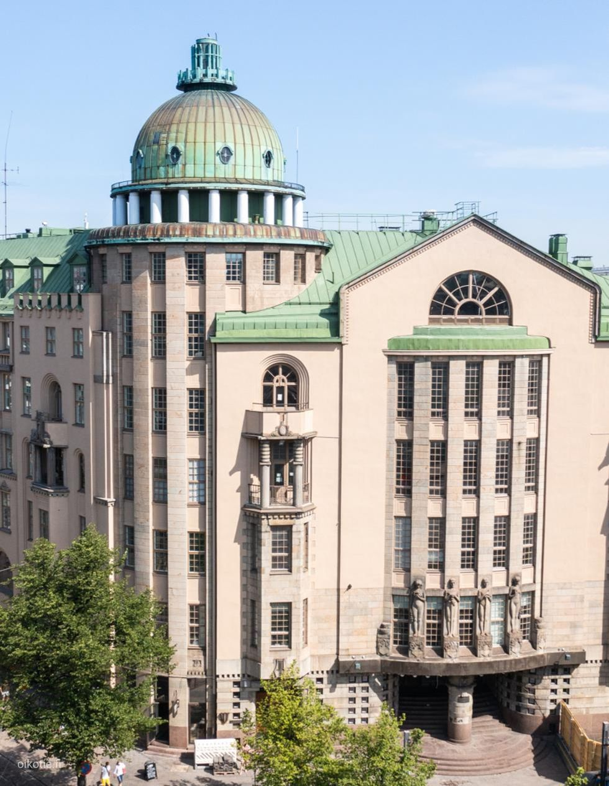

Uusi ylioppilastalo
Mannerheimintien pitkä siipi, aukiolle kääntyvä päätysiipi ja niiden pyöristetty kulmatorni on sovitettu Helsingin rakennusrekisterin pohjamuotoon. Pitkä harjakatto on nyt käännetty seuraamaan rakennuksen vinoa pitkää akselia; päätysiivellä on oma harjakattonsa. Alempi kattopinta täyttää siipien väliset alueet luonnostasolla. Raahaa mallia pyörittääksesi ja vieritä zoomataksesi.
Luonnoksen rajaus: Helsingin WFS antaa rakennuksen pohjamuodon ja 8 rekisterikerrosta. Arkkitehtuurilähteet kuvaavat Mannerheimintien siiven, aukion suuntaisen toisen siiven ja pyöristetyn tornin niiden nivelkohdassa. Kaupunginmuseo dokumentoi kupulinjan päämitat. Dormerikattojen kaltevuudet ja sijainnit on arvioitu nykykuvista, koska koko katon mittapiirustusta ei löytynyt. Malli ei ole varmennettu as-built-, LOD3-, lupa- tai rakennesuunnittelumalli. Stockmann / ABC City -piirustuksia ei ole käytetty tähän geometriaan.
Mallin kuva- ja mittalähteet

